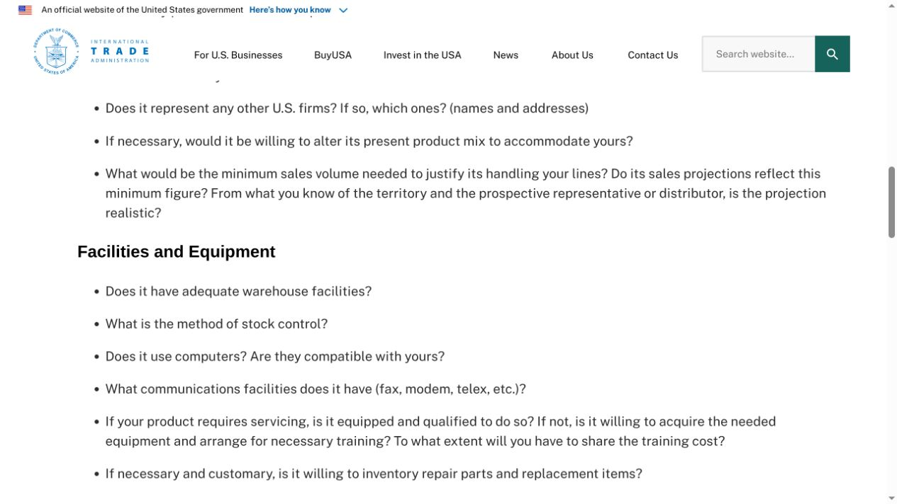
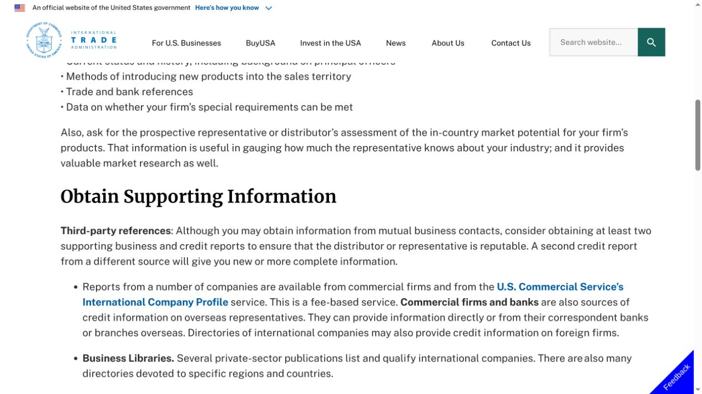

海外客户说“想做代理”时：电动车贸易商先问这 12 个问题
把美国国际贸易署与英国官方出口指南转化为电动自行车经销商筛选表：先分清代理与经销，再核验区域覆盖、库存、售后、财务和市场计划，避免只凭首封询盘授予独家权。
先别发独家协议：把“感兴趣”拆成可验证能力
一封写着“我们想成为你们国家独家代理”的邮件，只能证明对方愿意开启对话，不能证明其具备渠道、库存、售后、资金或品牌建设能力。电动自行车还涉及组装调试、故障诊断、备件、电池储存与运输、保修响应等持续工作，因此首单金额并不是判断渠道价值的唯一指标。
第一步要先分清合作模式。英国官方出口指南指出，代理通常代表供应商促成交易、赚取佣金且不持有库存；经销商通常买断产品、持有库存并负责当地物流，但供应商会减少对终端客户、定价和营销的直接控制。角色不同，询问的问题、报价结构和合同责任也应不同。
前六问：对方能否覆盖市场并把车服务好
一问：现有销售人员、门店、经销商或企业客户分别有多少？二问：实际覆盖哪些城市和客户类型，而不是笼统写“全国”？三问：目前代理哪些品牌，是否存在直接竞争或资源冲突？四问：仓库容量、库存系统和预计安全库存是多少？五问：是否有维修技师、诊断工具和保修处理流程？六问：是否愿意储备电池、控制器、显示器、刹车片等高频备件，并接受产品和安全培训？
美国国际贸易署的公开清单把销售队伍、销售记录、区域覆盖、产品组合、仓储、库存控制、服务设备、培训和维修备件分别列为评估项。对电动车项目而言，可以把这些通用问题进一步量化：要求提供覆盖地图、团队名单、仓库或维修点视频、现有品牌列表、备件计划和保修工单样例。

后六问：对方的承诺有没有证据和计划
七问：公司注册、股东和负责人信息能否核验？八问：能否提供贸易往来与银行资信参考？九问：过去三至五年的相关品类销售变化如何，数字来自什么记录？十问：对目标市场、竞品、价位和法规门槛的判断是什么？十一问：首个 90 天准备开发哪些客户、活动和内容？十二问：希望获得哪些支持，又愿意承担哪些库存、售后、营销和数据反馈责任？
美国国际贸易署建议在签约前调查候选代表，索取负责人背景、产品导入方式、贸易和银行参考，并考虑来自不同来源的至少两份商业或信用支持报告。搜索结果可以提供线索，但官方页面也提醒网络信息可能不够新或准确。关键结论应由注册资料、第三方报告、参考客户、银行或专业服务机构交叉验证。

用试运行换取独家权，而不是用独家权换取试试看
在信息基本核验后，可以先签有期限、有区域和有产品范围的试运行安排。一个实用框架是：30 天完成培训、样车和目标客户清单；60 天完成首轮拜访、内容上线和售后演练；90 天复盘合格线索、报价、订单、库存与服务响应。该框架是本文基于官方评估维度提出的管理建议，不是法规或统一行业标准。
独家权应与可测量里程碑挂钩，例如最低采购不是唯一条件，还可加入有效渠道覆盖、演示车、备件可用率、技师培训完成率、线索反馈时效和保修响应。正式代理或经销合同还需要结合目标国家法律，由合格律师审查区域、期限、商标使用、定价边界、数据、反贿赂、终止和售后责任。
给电动车贸易商：一周内做出可复用的筛选表
第一天把代理与经销商分别定义清楚；第二天将 12 个问题做成表单，并给每项设置“回答、证据、待核验、负责人和截止日”；第三至四天收集公司注册、品牌、客户、仓库、维修、财务和市场计划资料；第五天安排视频查看仓库与服务点；第六天联系参考方并完成公开信息核验；第七天形成继续、试运行或停止三种结论。
评分可以分成市场覆盖、商业可信度、库存与资金、技术与售后、品牌投入五组，但不要让总分掩盖红线。身份无法核验、拒绝提供参考、要求立即全国独家、夸大无法证明的客户关系、没有售后能力却销售高维护产品，均应单独升级审查。保存证据日期，并在签约后定期更新，而不是把尽调当作一次性表格。